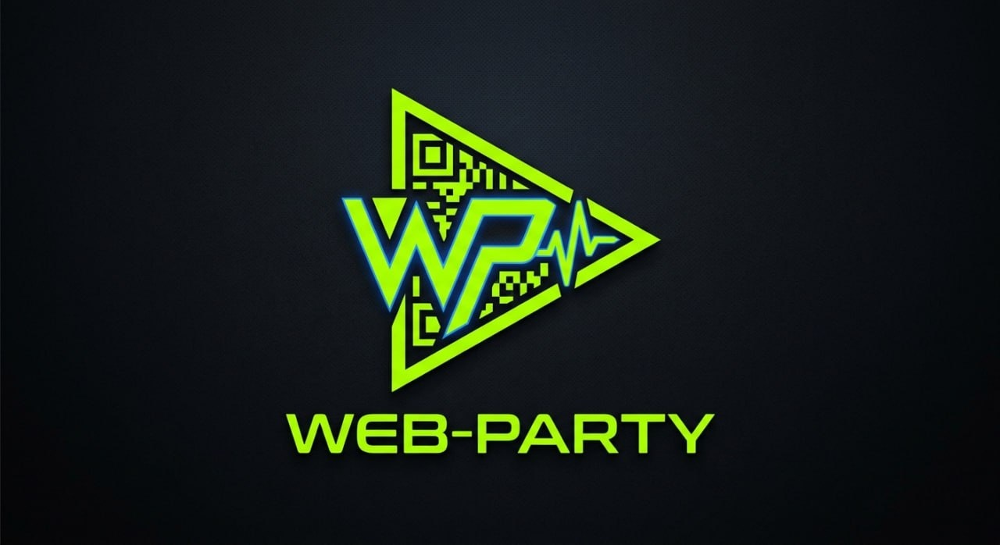
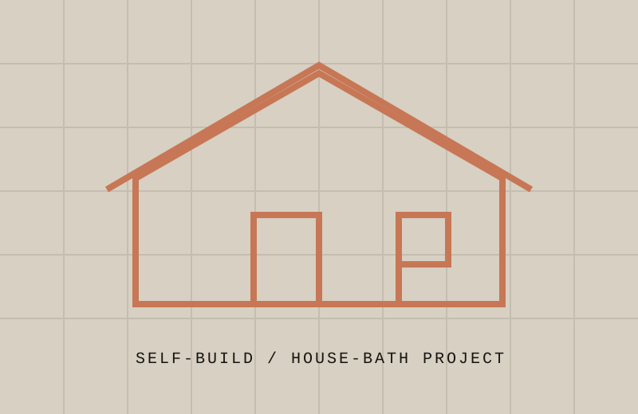
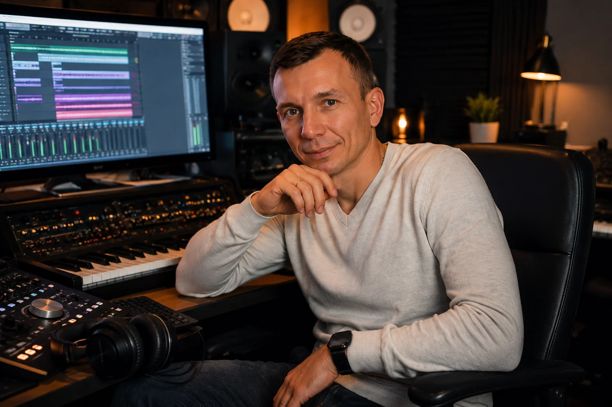

AI без хаоса
Подберу инструмент под задачу, проверю ограничения, помогу собрать промпты, процесс и понятный результат.
Разобрать задачуAI · САЙТЫ · ЦИФРОВЫЕ ЗАДАЧИ
Разберу задачу, выберу инструменты и соберу понятный результат вместе с тобой.
Обсудить задачу ↗
Не продаю иллюзию,
что AI сделает всё сам.
Сначала понимаю,
что действительно нужно.
Потом проверяю
и собираю рабочий путь.
Подберу инструмент под задачу, проверю ограничения, помогу собрать промпты, процесс и понятный результат.
Разобрать задачуОт структуры и текста до интерфейса и публикации. Без лишней инфраструктуры и пустых эффектов.
Посмотреть проектыРазложу сложную тему, проверю источники и соберу документ, презентацию или рабочую инструкцию.
Обсудить результатНе обещание.
Вот работа.
Портфолио

Инструмент для мероприятий и DJ-каталога. Роли, реальные сценарии и интерфейс для быстрой работы.
Открыть проект ↗Пример того, как задача о личной визитке превращается в структуру, визуальную систему и доступный preview.
Посмотреть сначала ↑
Публичная история решений, ошибок и реальной самостоятельной сборки. Практика важнее красивой легенды.
Открыть историю ↗Портфолио готово к расширению: задача, ход работы, результат и проверяемая ссылка.
Фиксируем задачу, ограничения и критерий готовности.
Сравниваю инструменты и отсекаю то, что красиво только в рекламе.
Делаю рабочий результат и показываю промежуточные версии.
Объясняю, как пользоваться и что можно развивать дальше.
Здесь будет размещён официальный сертификат: название программы, учреждение и дата. Пока документа нет в исходниках, я не придумываю данные.
Скан или фотография документа

Музыка держит главный принцип всей работы: инструменты важны, но ответственность за итог остаётся у автора.
Слушать работы ↗Напиши, что хочешь получить и что уже пробовал. Начнём с честной оценки.